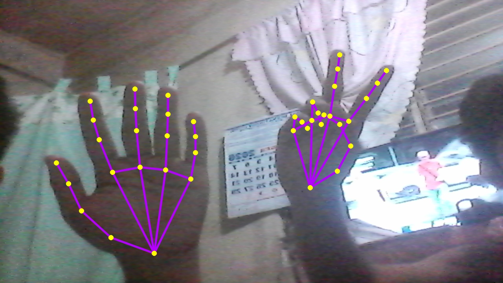
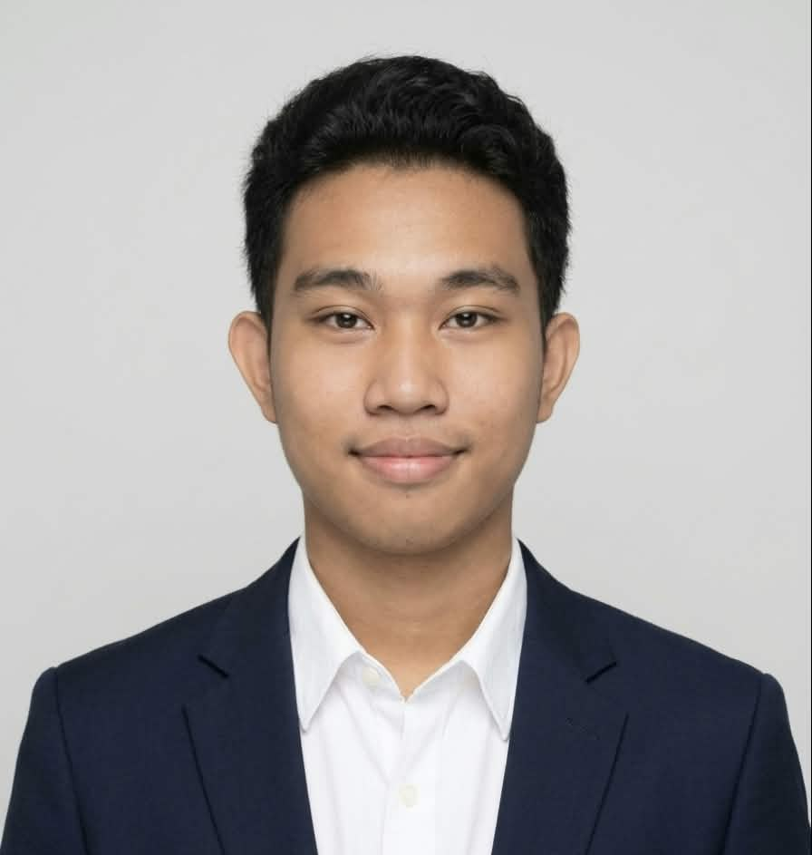
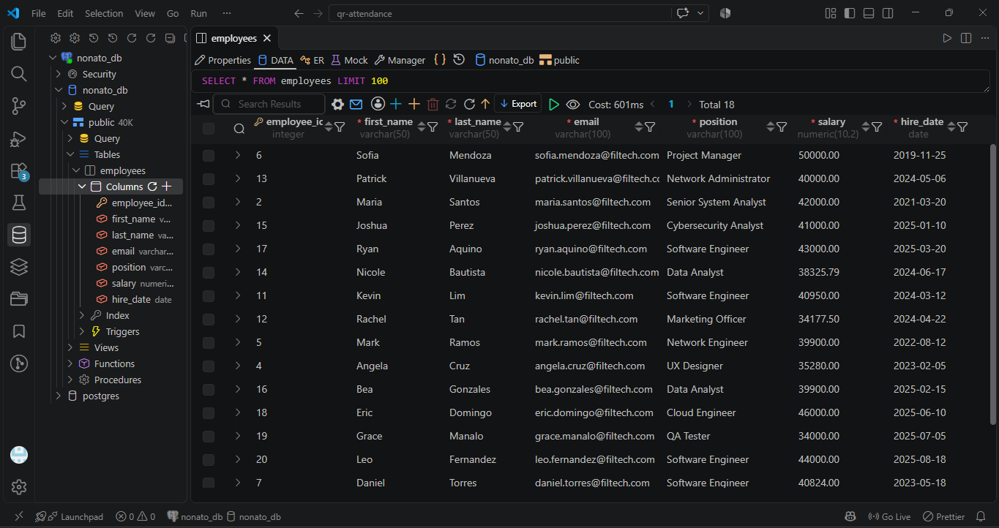
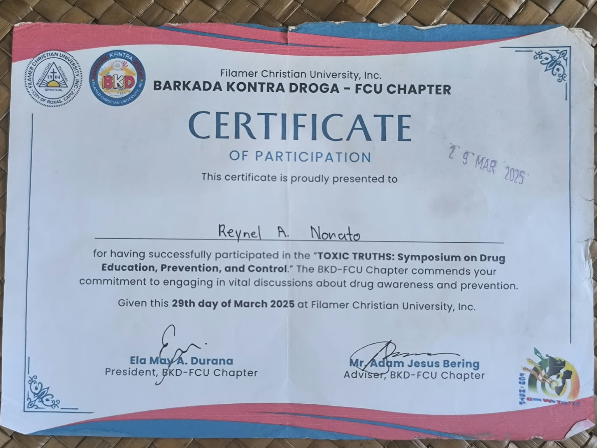
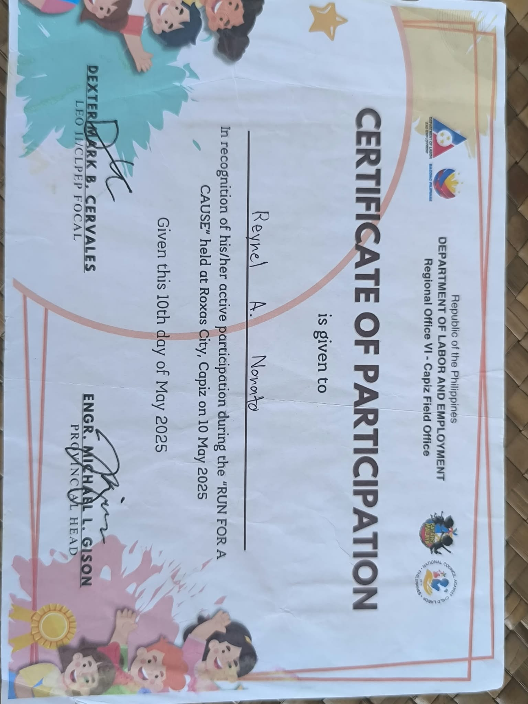
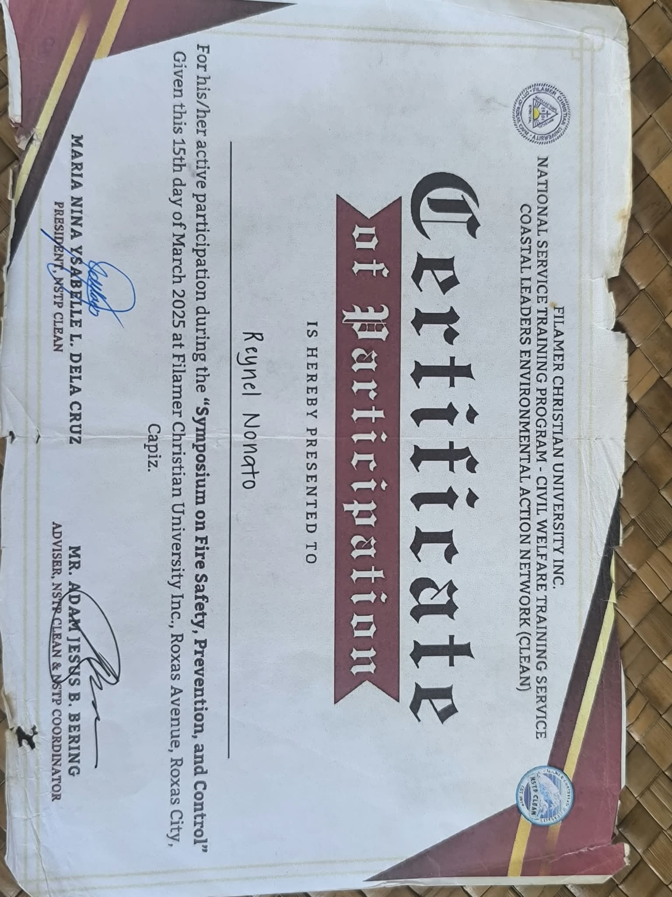
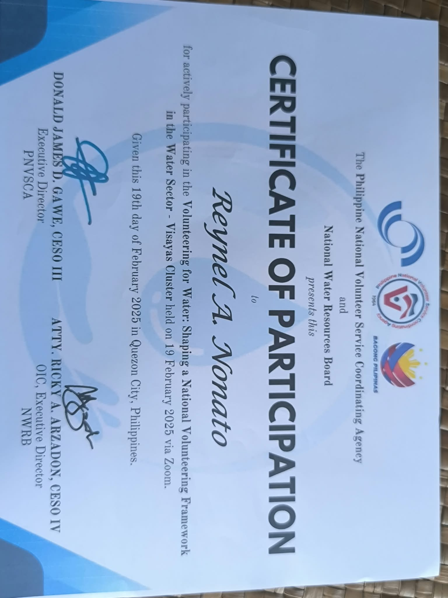
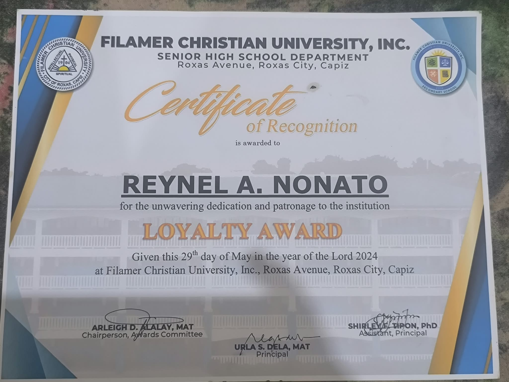
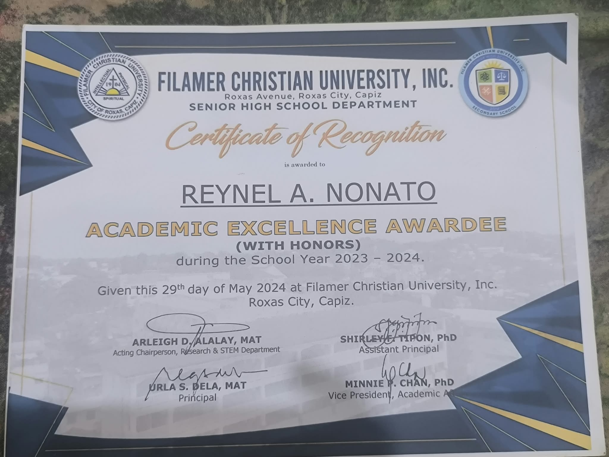
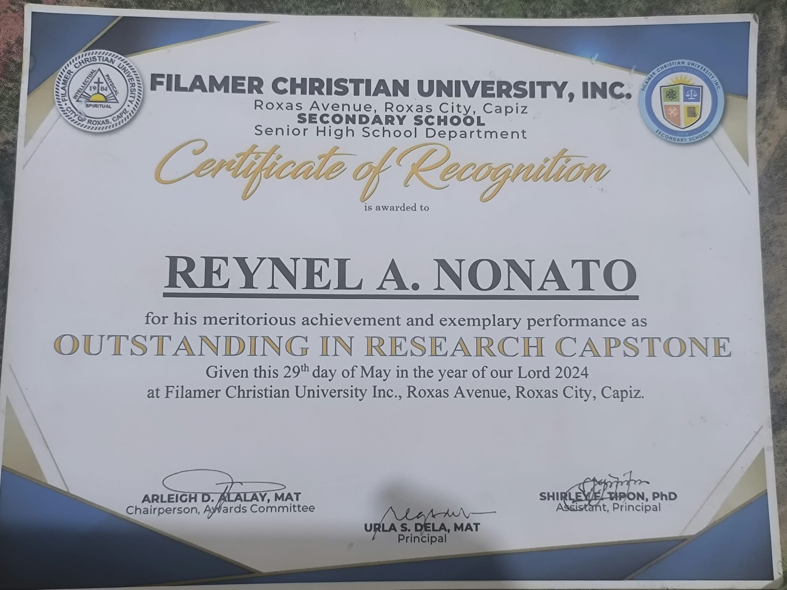

PROJECT / 01

Computer Vision & Gesture Tracking
A Python application that tracks hand gestures and facial landmarks through a live camera feed, displaying position data alongside real-time video.

I'm Reynel A. Nonato, an Information Technology student from Capiz, Philippines. I build practical software and web applications using Python, Django, SQL, and modern web technologies. I enjoy solving problems, debugging, and turning ideas into useful digital solutions.
A student developer focused on practical projects, continuous learning, and building reliable software.
I'm a BS Information Technology student building practical experience in Python, Django, SQL, and web development through hands-on projects.
I'm interested in creating useful, reliable software and improving through debugging, problem-solving, and learning new tools. I enjoy working on project features from database design to user-facing interfaces.
My goal is to continue strengthening my technical skills, contribute to meaningful projects, and grow as a software developer.
Technologies and strengths developed through coursework, practice, and hands-on projects.
A selection of academic and personal projects. Screenshots can be added to each card later.

A Python application that tracks hand gestures and facial landmarks through a live camera feed, displaying position data alongside real-time video.

A web-based system for organizing stock records and computer parts, with CRUD features for products, stock, suppliers, and users.

A responsive website created to showcase my background, technical skills, and project work through clear navigation and structured layouts.

Coursework involving relational database design, SQL queries, data filtering, sorting, and aggregate operations.
Academic background at Filamer Christian University, Roxas City, Capiz.
Ongoing · 3rd Year College · Roxas City, Capiz, Philippines
With Honors · Loyalty Awardee · Capstone Project Awardee
Loyalty Awardee
Loyalty Awardee
Participation certificates. More certificates can be added later.

“Toxic Truths: Symposium on Drug Education, Prevention, and Control.”

“Run for a Cause.”

“Symposium on Fire Safety, Prevention, and Control.”

“Volunteering for Water: Shaping a National Volunteering Framework in the Water Sector - Visayas Cluster.”

Loyalty Award.

Academic Excellence Awardee (With Honors).

Outstanding in Research Capstone.
Participates in organization activities, develops teamwork and communication skills, and takes part in ICT-related learning opportunities.
Interested in my projects or want to connect? You can reach me through email or visit my professional profiles.